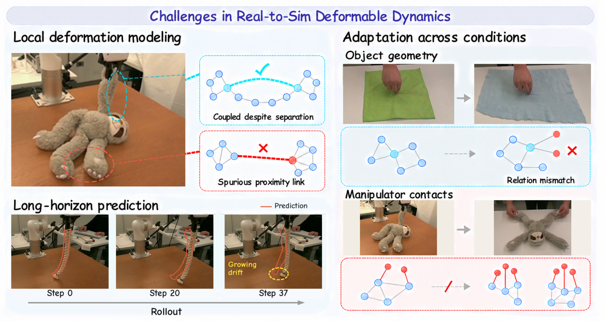
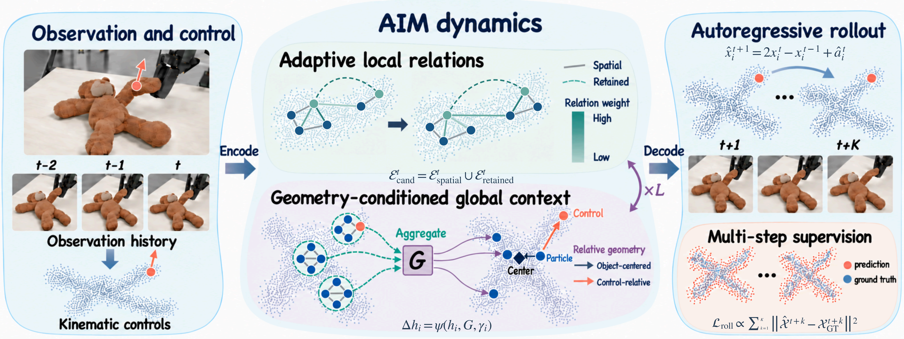

Model particle relations
Represent deformation dependencies beyond spatial proximity alone.
From local interactions to deformable motion.

Errors in local interactions accumulate over time, in both familiar and novel conditions. Changes in geometry and contact introduce a further challenge: adapting how interactions are modeled.
Folding brings distant regions together; stretching separates regions whose motion remains coupled.
ERROR ACCUMULATIONInaccurate responses feed into subsequent predictions, changing shape and motion over rollout.
CHANGING CONDITIONSNew geometries and contact patterns change how manipulation propagates through the object.
A particle-based view of dynamics, connected to rendered observations.
AIM models how manipulation propagates through deformable objects. From particle motion and manipulator states, it models interaction-dependent information exchange to predict the next state and roll motion forward.

The framework connects particle interactions, the propagation of manipulation effects, and autoregressive state prediction.
Represent deformation dependencies beyond spatial proximity alone.
Connect local manipulation responses with coordinated motion across the object.
Use the predicted particle state to advance the dynamics through successive steps.
Explore six selected PhysTwin scenes. Switch between rendered motion and tracked trajectories; all four comparison columns share the same timeline.
Look at the contact region first, then the relative shape away from it. Overall translation alone does not describe the deformation.
Rollout comparisons on the PGND dataset across rope, bread, sloth, and paperbag.
Explore selected transfers across actions and object instances, alongside a shared-model example. Each video compares predictions with the observed target motion.
Project resources will be linked when available.
Citation will be added with the manuscript.